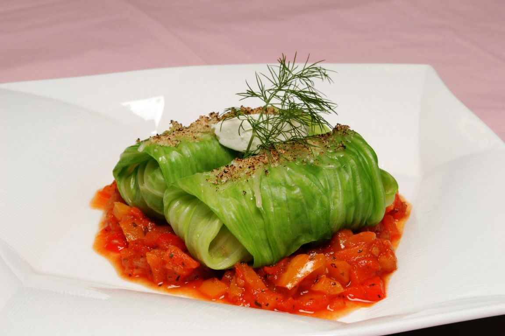
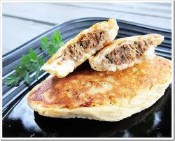
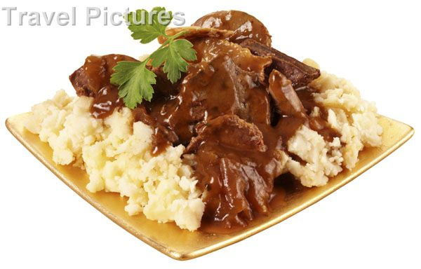
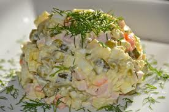
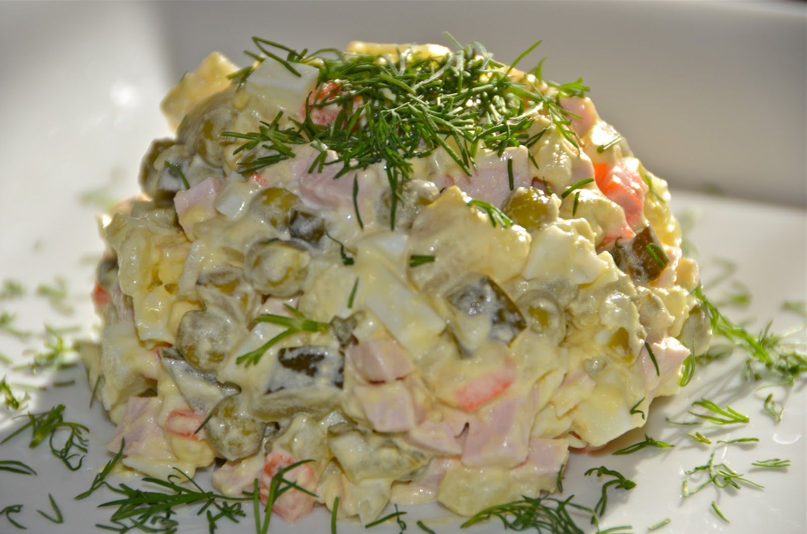
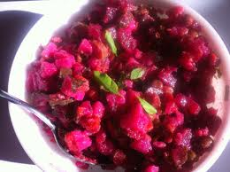
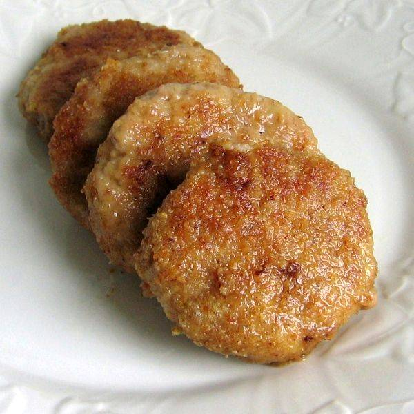
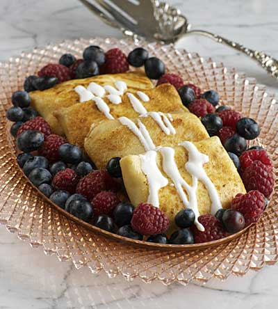
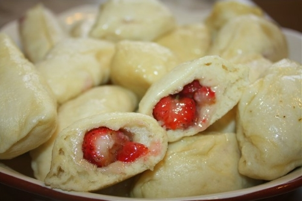

Golubtsy - cabbage roll consisting of cooked cabbage leaves wrapped around a variety of beef, lamb, or pork and is seasoned with garlic, onion, and spices

Potato zrazy – croquettes with fillings. The most popular fillings are mushroom, egg with spring onion and meat

Potato (kartoplia, also barabolia or bulba): young or peeled, served with butter, sour cream, dill; a more exclusive variety includes raw egg And Fried Liver


Olivye (Salade Olivier): salad made out of cooked and chopped potatoes, dill pickles, boiled chopped eggs, cooked and chopped ham, chopped onions, canned peas, mixed with mayonnaise.

Vinigret (from French Vinaigrette): salad with cooked and shredded beets, sauerkraut, cooked and chopped potatoes, onions, and carrots, sometimes pickles mixed with some sunflower oil and salt.

Kotlety/Sichenyky (cutlets): minced meat or fish mixed with eggs, onions, garlic, breadcrumbs, and milk, fried in oil and sometimes rolled in breadcrumbs.

Mlyntsi: crêpes (blyntsi or nalisnyky), filled usually with cottage cheese, meat, cabbage, fruits, served with sour cream.

Varenyky (Perogy): Dumplings stuffed with fillings such as potato and cheese, often served boiled.